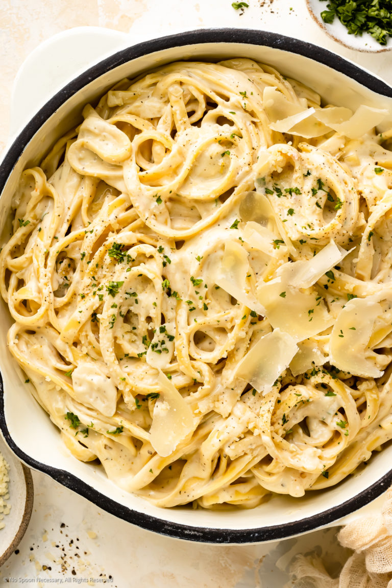

One-Pot-Pasta with creamy cheese sauce

If you ever had the need for cheese this is your lifesaver.
If you join me on cooking you will get a delicious dish of noodles in a wonderful creamy cheese sauce
garnished with fresh parsley and a little shot of hot through chilli pepper.
Ingredients for 2 portions:
- 1x Chili pepper
- 10 gram of parsley
- 2x shallots
- 30 gram of butter
- 60 gram of Mascarpone
- 30 gram of Parmesan
- 180 gram of Bucatini Grandi or Macaroni
- Salt
- pepper
- two spoons of olive oil
- two bunches of garlic